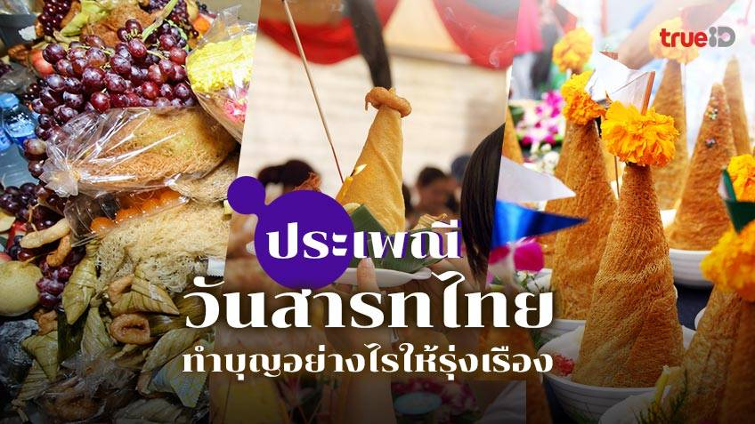

ประวัติและความสำคัญ
วันสารทไทย เป็นประเพณีทำบุญกลางปีของไทยที่สืบทอดมาแต่โบราณ ตรงกับวันสิ้นเดือน ๑๐ หรือวันแรม ๑๕ ค่ำ เดือน ๑０ เป็นช่วงที่พืชพันธุ์ธัญญาหารกำลังออกผลผลิต จึงมีการนำผลผลิตแรกเก็บเกี่ยวมาปรุงเป็นข้าวทิพย์และข้าวมธุปายาสเพื่อถวายพระสงฆ์ และที่สำคัญคือการทำบุญเพื่ออุทิศส่วนกุศลให้แก่บรรพบุรุษผู้ล่วงลับไปแล้ว
มีความเชื่อว่าในวันนี้ ประตูนรกจะเปิดให้ดวงวิญญาณของเปรตและสัมภเวสีออกมารับส่วนบุญจากญาติพี่น้องที่ยังมีชีวิตอยู่ได้ ดังนั้นการทำบุญในวันสารทจึงถือเป็นการแสดงความกตัญญูต่อบรรพชน